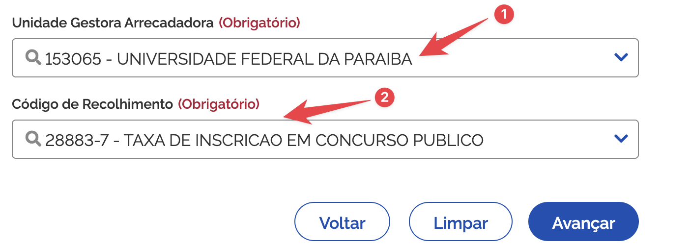

Concurso para Professor Substituto – Departamento de Ciências Exatas (CCAE/UFPB)
⚠️ Acesse aqui o edital
⚠️ ATENÇÃO! Se alguma informação divergir entre o que está informado nesta página e o que está no edital, considere a informação do edital e, por favor, informe a divergência à comissão do concurso: concursos@dcx.ufpb.br
Informações Gerais
Este concurso visa à contratação de Professores Substitutos para o Departamento de Ciências Exatas (DCX) do Centro de Ciências Aplicadas e Educação (CCAE) da UFPB – Campus IV (Rio Tinto/PB).
Endereço: Av. Santa Elizabeth, S/N, Centro – Rio Tinto/PB
Contato: concursos@dcx.ufpb.br
Vagas Disponíveis
1. Infraestrutura de Redes de Computadores
- Regime: 20 horas semanais (T-20)
- Classe: A – Assistente
- Vagas: 1 (Ampla Concorrência)
- Requisito mínimo: Mestrado em Ciência da Computação ou Engenharia da Computação e áreas afins
2. Linguagem de Programação
- Regime: 20 horas semanais (T-20)
- Classe: A – Assistente
- Vagas: 1 (Pessoa Preta ou Parda – PPP)
- Requisito mínimo: Mestrado em Ciência da Computação e áreas afins
Calendário do Concurso
| Etapa | Data |
|---|---|
| Prova Didática | 29/04/2025 |
| Prova de Títulos | 05/05/2025 |
| Resultado Preliminar | 09/05/2025 |
⚠️ As datas são prováveis e podem ser confirmadas neste site.
Inscrição
- Período: 14 a 23 de abril de 2025
- Taxa:
- R$ 60,00 (regime T-20)
- Formas de inscrição:
- Presencial
- Via postal (SEDEX com AR)
- Por procuração
Documentos exigidos:
üìÇAcesse esta pasta para acessar os modelos de requerimento de inscri√ß√£o e termo de autodeclara√ß√£o.
Como se inscrever no concurso
PASSO 1: Preencha o Requerimento de inscrição.
PASSO 2: Gere a GRU para pagar a taxa de inscrição:
- Acesse o site Tesouro Nacional e gere uma GRU.
No site, informe os dados a seguir: - (1) Unidade Gestora Arrecadadora:
153065 - (2) Código de recolhimento:
28883-7 - TAXA DE INSCRIÇÃO EM CONCURSO PÚBLICO - Clique em
Avançar

- Na página seguinte, preencha o formulário com os seguintes dados:
- CPF e nome completo
- Número de referência:
150647254 - Competência: mês e ano atual (por exemplo,
04/2025) - Vencimento: data do pagamento. Recomendamos informar a data em que você está preenchendo o formulário e realizar o pagamento no mesmo dia.
- Valor principal: valor da inscrição. Para este concurso T-20:
R$ 60,00 - Informe
0,00nos campos de Descontos, Outras deduções, Mora/Multa, Juros/Encargos e Outros acréscimos

PASSO 3: Pague a GRU (Não serão aceitos comprovantes de agendamento);
PASSO 4: Apresente a documentação no ato da inscrição. Você pode se inscrever presencialmente, por procuração ou via postal - (Exclusivamente Sedex):
Junte os seguintes documentos:
- ✅ Requerimento de inscrição
- ✅ Comprovante de pagamento da GRU (não aceitamos comprovante de agendamento);
- ✅ Cópia autenticada de documento oficial de identidade com foto e CPF;
- ✅ Foto 3x4 recente;
- ✅ Currículo (Lattes ou Vitae) devidamente comprovado;
- Ao preparar o currículo, SUGERIMOS FORTEMENTE que você organize os documentos de comprovação na ordem e de acordo com o ANEXO III do edital.
- Classifique cada comprovação de acordo com os itens da tabela.
- Não envie comprovantes que não podem ser classificados segundo o ANEXO III.
Se for se inscrever via postal, envie a documentação, usando SEDEX, para:
Departamento de Ciências Exatas
UFPB - Campus IV
Av. Santa Elizabeth, S/N - Centro
Rio Tinto/PB
CEP: 58.297-000
Isenção da Taxa
Solicitação entre 09 e 10 de abril de 2025, por e-mail para concursos@dcx.ufpb.br.
Podem solicitar:
- Inscritos no CadÚnico e membros de família de baixa renda;
- Doadores de medula óssea, com documentação comprobatória.
Observações Finais
- A contratação será por até 1 ano, prorrogável.
- Não é permitida nova contratação com base na Lei nº 8.745/93 antes de 24 meses do encerramento de vínculo anterior como substituto.
- Acompanhe todas as atualizações no site de cada concurso: